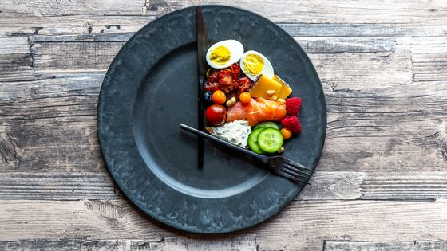

Comer cada 3 o 4 horas

Para empezar, es importante hidratarse y nutrirse bien, por lo que no hay que dejar el estómago vacío más de 4 horas aproximadamente. El motivo es que dejar el estómago más de esas horas vacío es peligroso porque llegaremos a la siguiente ingesta de comida con más ansiedad, especialmente aquellas personas que viven en grandes ciudades y no disponen de tiempo para cocinar y si están hambrientos, optarán por comer comida rápida sin esperar para ingerir plato más nutritivo.